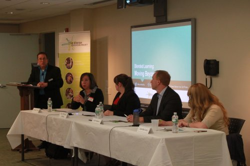

Guest blog post by Sabrina Bernath, Math Department Chair at The Frisch School
The timing could not have been more perfect for “Blended Learning: Moving Beyond the Pilot,” a panel discussion hosted by The DigitalJLearning Network on the evening of May 13th, 2014.
The math department at The Frisch School in Paramus, New Jersey is at an exciting and pivotal point in its 41 years of existence. This past winter, the department was the recipient of a grant from The Jewish Education Project to offer our students an online math program along with their traditional classroom instruction. As a result, we will be able to supply up to 200 students, about a third of our student body, with an online component to their math class. This will greatly enhance and expand how much and how well these students will learn in the coming years.
Catchup Math, the program we chose, generously gave us a free three month trial to experiment. We have had a wonderful time experimenting with different ways of integrating it into our program to create a blended experience for our students. As both the school year and our three month trial are drawing to a close, I am left with the daunting question “now what?” Being the Chair of the Math Department, the answer is almost entirely up to me. And after three fascinating months, I am full of ideas and even more questions than when I started.
The summer will be over in the blink of an eye. Come September, I have to be ready to launch this initiative with a third of my student body. I need a workable plan, and I need it soon. I was starting to feel overwhelmed and even nervous that I couldn’t pull this off until I attended “Blended Learning: Moving Beyond the Pilot”. The ideas and messages expressed by the panelists could not have come at a better time for me.
Though the room held about 30 educators engaged in discussion, the program felt like it was tailor-made for me. It was uplifting for me to hear from four successful educators and consultants in the field. Their honest, realistic and insightful observations about what works and what doesn’t work gave me knowledge that I would have needed months to learn on my own.
There were two messages in particular from that evening that really resonated with me. The moderator, Gary Hartstein, Director of DigitalJLearning Network, started the panel discussion with the perfect question: “What needs to be in place to make blended learning a success?” I would have thought the panelists’ first responses would involve infrastructure or money or maybe even professional development. However, the first response was that you need to have goals; you should know why you are using blended learning and what you want your students to gain from the experience. Within those first few minutes of the discussion, my problem became glaringly obvious. I do not yet have clear goals for exactly what I want this initiative to accomplish and how I want it to positively affect my students. I have focused a great deal on the logistics of integrating this new program into a busy school day, what exact online program to subscribe to, and which students to involve in the program, but not enough on the end goal. I am now circling back to developing goals, and once this crucial step is finalized, I will then use the goals to inform all the other parts of the program.
The second message that stayed with me was about the need for ‘teacher buy-in’ to make any blended learning initiative work well. I am fortunate enough to have a group of teachers under my supervision who trust my instincts and direction. They are a reflective, responsive and diverse group, who are open and willing to change. Within this group are ‘super-dedicated’ teachers who run on little sleep and give more than expected. The panelists stressed that what works with a small group of super-dedicated teachers is not necessarily going to work out the same way with a larger group. The panelists went on to say that it is important to have realistic goals of what to expect from all classroom teachers and not just from the top few teachers. With open, clear and realistic expectations, blended learning can be implemented successfully within the larger framework of a department or school.
These are just two of the great points raised by the experienced panelists that evening. It was an incredibly worthwhile event. I have already started reviewing my notes and know that they will help me as I begin this groundbreaking journey at my school. While I know there will be bumps in the road, I am optimistic for this coming September and grateful for the resources and people at The Jewish Education Project and the DigitalJLearning Network.
Sabrina Bernath, a 2013 nominee for “Princeton University Distinguished Secondary School Teaching” award, is a math teacher and department chair at the Frisch School in Paramus, New Jersey. She can be followed on twitter @mathwithbernath and she blogs for the Frisch School math department at frischmath.blogspot.com.